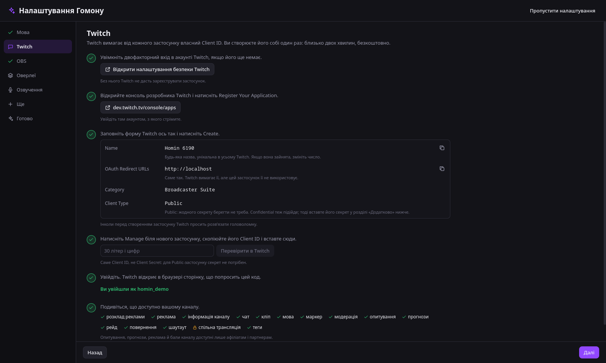
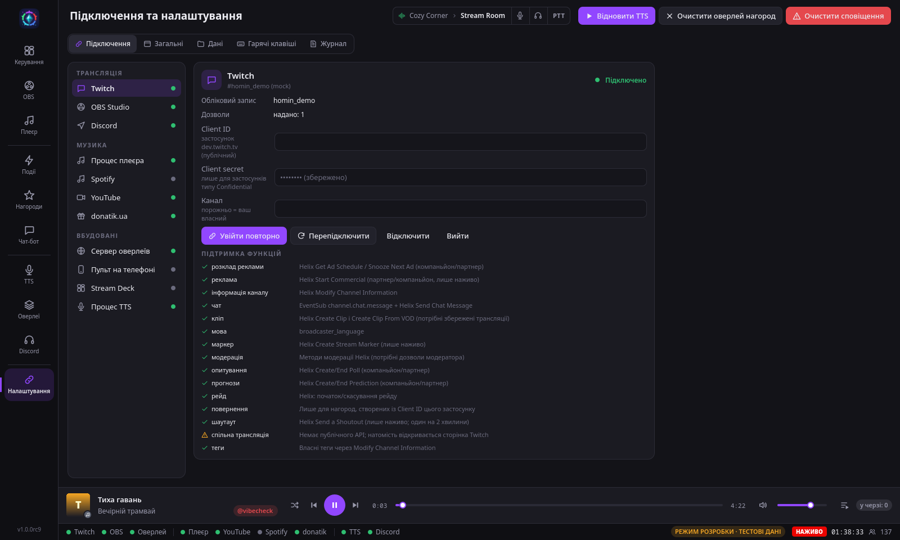
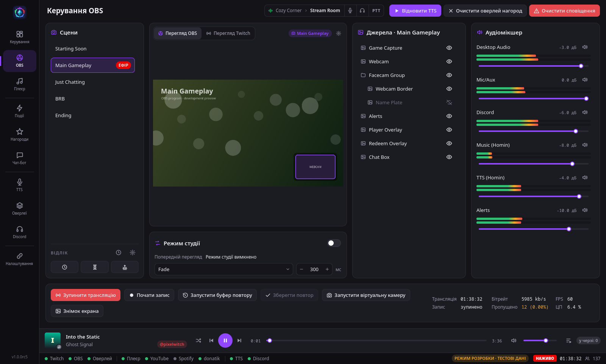
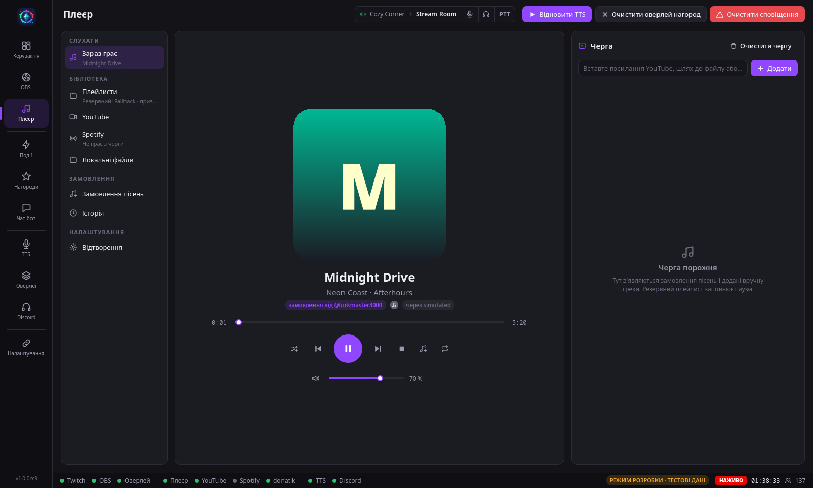
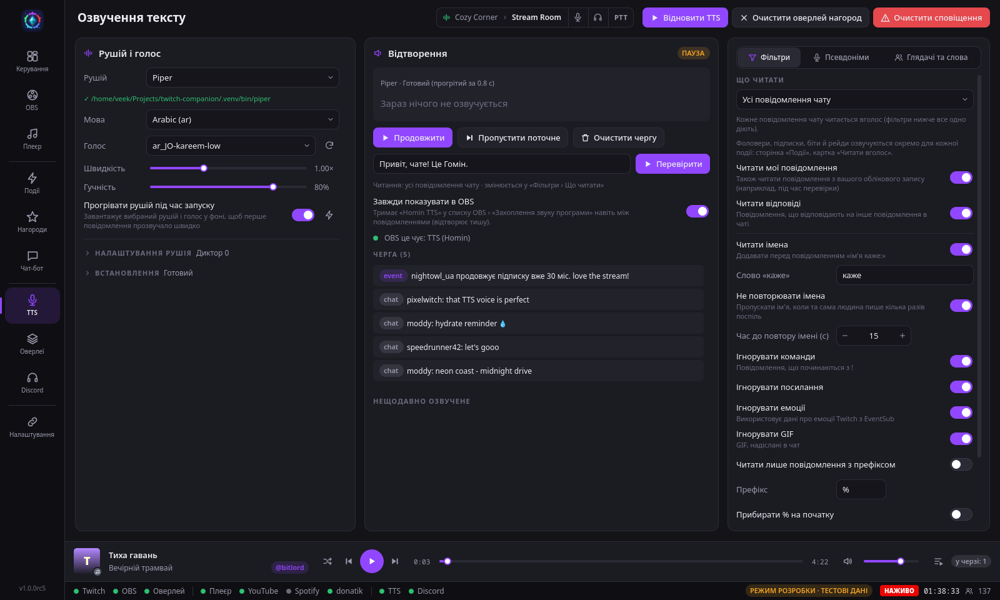
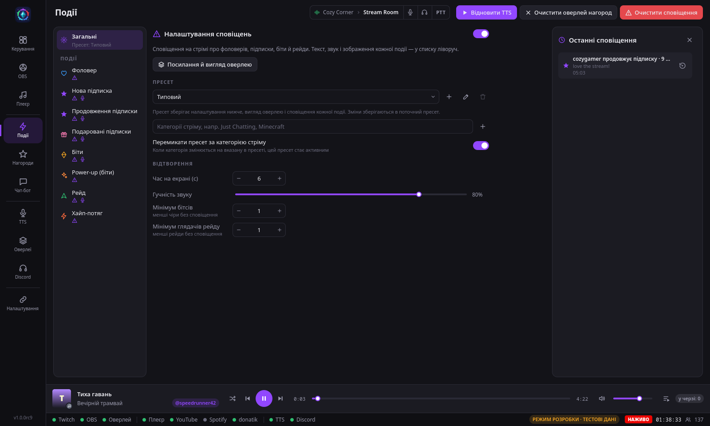
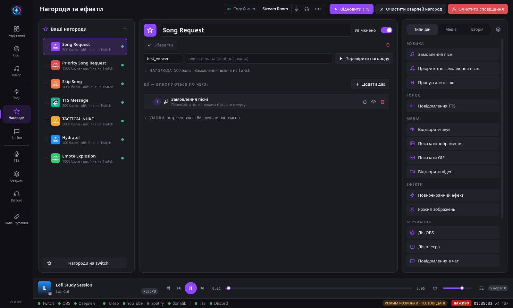
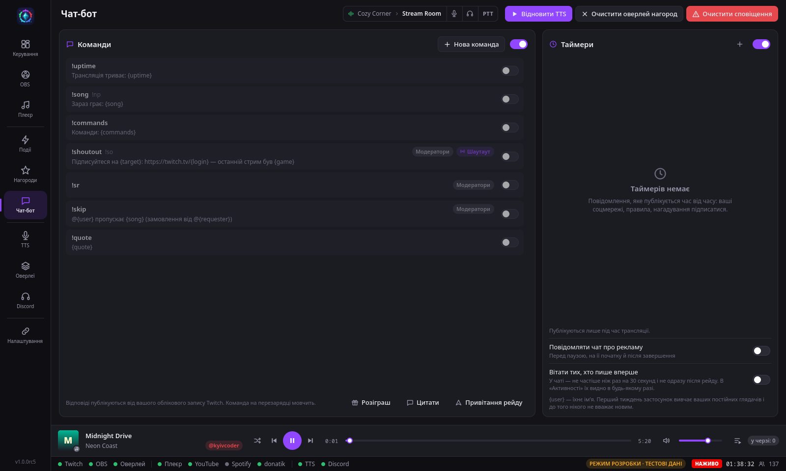
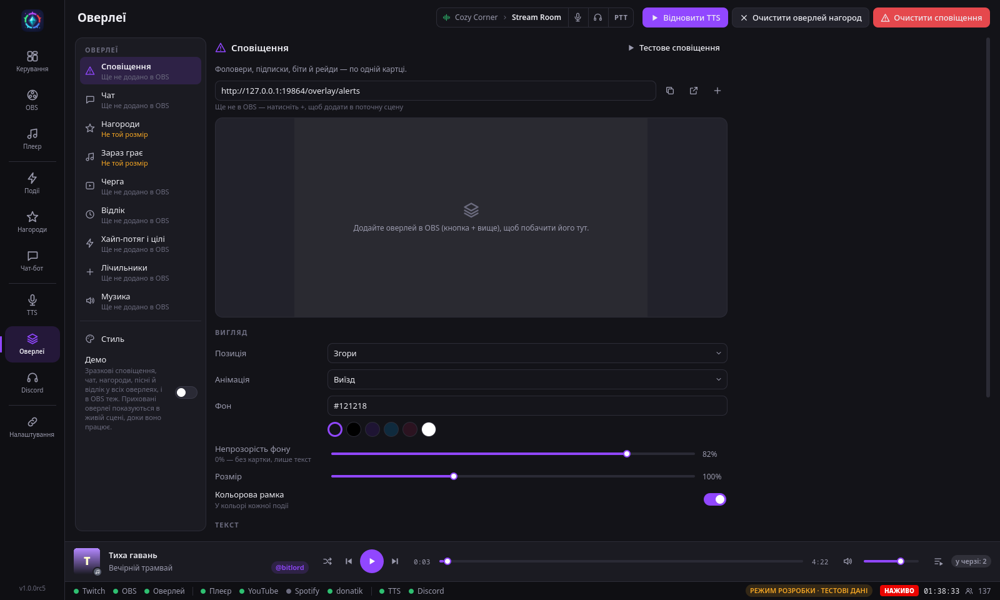
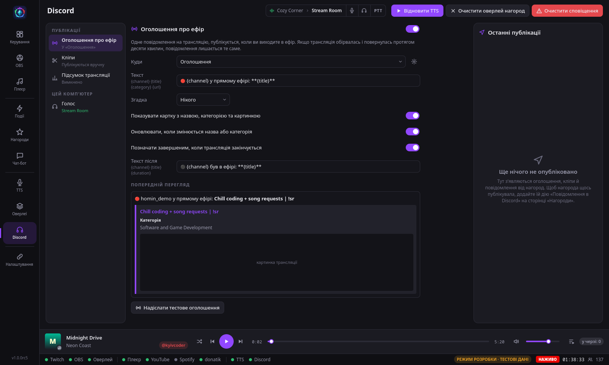

Докладний довідник: як встановити й підключити, що робить кожна сторінка застосунку, як налаштувати оверлеї,
нагороди, скрипти, чат-бот і пульт — і що робити, коли щось не працює. Назви кнопок — як в українському інтерфейсі.
Інсталятор не підписано, тож Windows SmartScreen покаже «невідомий видавець». Натисніть
Додаткові відомості › Усе одно запустити.
Під час першого запуску Гомін сам завантажить музичний програвач mpv (близько 30 МБ) і звірить його відбиток.
На Windows 10 ще й маленький розпакувальник 7-Zip (0,6 МБ).
Нову версію встановлюйте поверх старої — налаштування й дані лишаються.
Та сама збірка є архівом теки .tar.gz: розпакуйте будь-куди й запустіть Homin/homin.
Хоч так, хоч так, менеджером пакетів встановіть:
Програма
Для чого
mpv
відтворення музики (і віконце перегляду Twitch)
pipewire або pulseaudio-utils
озвучення TTS окремим джерелом звуку, яке захоплює OBS; зведення музики
ffmpeg
запасне відтворення, тривалість медіафайлів, прослуховування звуків
Пункт у меню застосунків вмикає Налаштування › Загальні › Показувати в меню застосунків.
Плавний перегляд OBS
Без цього перегляд OBS у Гоміні — це послідовність знімків, і кожен — додаткова робота для OBS. Коли перегляд
показує справжнє відео, у його куті написано ● Живе відео.
Windows: нічого встановлювати не треба. Гомін читає віртуальну камеру OBS через mpv (вже завантажений для
музики) або ffmpeg. Кожен кадр іде через JPEG, тож процесора це бере більше, ніж на Linux.
Linux: потрібен модуль ядра v4l2loopback. Гомін сам вмикає віртуальну камеру OBS, поки її
показує перегляд, і вимикає, якщо вмикав сам. Встановіть і завантажте модуль один раз (Arch; потрібні заголовки вашого ядра):
Гомін користується модулем, лише якщо його вже завантажено: інакше OBS попросив би ваш пароль. Шестірня на
перегляді вмикає й вимикає відео, задає кадри за секунду (10–60, спершу 30), розмір (Повний, до 1920 px, або
Половина, легше для процесора) і розмір та частоту знімків, які стоять там, де відео немає (Попередній
перегляд у режимі студії). Вона ж підказує, скільки що коштує.
Спробувати без облікових записів
Параметр --mock запускає режим розробки: усі сторінки наповнюються вигаданим чатом, подіями й піснями,
OBS теж несправжній, а дані лежать в окремій теці. Нічого не надсилається на Twitch. Озвучення стартує на паузі —
Відновити TTS угорі вмикає його. Усі знімки екрана на цьому сайті зроблено саме так.
./Homin-*-x86_64.AppImage --mock
Перший запуск
Активація
Спершу Гомін просить Активувати Гомін: вставте ліцензійний ключ (починається з
HOMIN-) і увійдіть у Twitch обліковим записом, для якого ключ створено. Те саме вікно проводить через вхід
у Twitch, як майстер. Потім Гомін перезапускається вже з усім увімкненим.
Поки ключа немає, нічого не працює (ні OBS, ні музика, ні TTS, ні оверлеї), але
Спершу роздивитися дає погортати сторінки — вони притьмарені й не приймають кліків.
Ключ прив’язано до каналу, а не до імені: він працює й після перейменування каналу.
Якщо ввійшли іншим обліковим записом, вікно про це скаже й запропонує вийти.
«Про програму» показує, для кого ключ; Видалити ключ (двічі) забуває його й перезапускає
Гомін неактивним. Вхід у Twitch лишається.
Користуючись ключем, ви приймаєте ліцензійну угоду; політика приватності пояснює, що застосунок зберігає й надсилає:
нічого — нам, а іншим сервісам — лише те, чого потребують увімкнені вами функції. Обидві є під полем ключа й у «Про програму».
Майстер налаштування
Ліворуч — кроки, праворуч — інструкції по черзі. Біля кожної інструкції — кнопка чи поле, що її виконує, а номер
стає зеленою позначкою, щойно Гомін бачить, що зроблено. Те, чого застосунок побачити не може (наприклад, налаштування
в браузері), позначаєте кнопкою Готово.

Крок Twitch: що ввести в кожне поле форми Twitch, з кнопками копіювання
Мова й вигляд — мова застосунку й типових текстів у чаті, тема, масштаб.
Twitch — двофакторний вхід, власний застосунок на dev.twitch.tv, Перевірити в Twitch
для Client ID, вхід кодом і що доступно вашому каналу.
OBS — сервер WebSocket, пароль і підключення; якщо не вийшло, майстер пише чому.
Оверлеї — виберіть сцену й оверлеї, і Додати до сцени додасть їх в OBS потрібного розміру.
Озвучення — рушій (Piper, StyleTTS2, голоси системи або «Не зараз»), встановлення, голос, проба й звук для
OBS. Майстер сам перевіряє, чи OBS чує озвучення.
Ще — Discord, Spotify, donatik.ua і перенесення з інших застосунків (усе необов’язкове).
Готово — як Гомін запускається й закривається, і що вже готово.
Кожен крок можна відкласти (Пізніше) або пропустити все. Знову майстер відкриває
Налаштування › Дані › Налаштувати знову — і показує, що вже зроблено.
Підключення
Усе з майстра можна зробити вручну: Налаштування (останній пункт меню) › вкладка
Підключення. Ліворуч — сервіси з їхнім станом, праворуч — налаштування вибраного. Клік по
сервісу в нижньому рядку відкриває його тут.

Twitch підключено; нижче — що дозволяє ваш обліковий запис
Twitch
Twitch вимагає, щоб кожен застосунок мав свій Client ID. Це безкоштовно й займає дві хвилини.
Name — будь-яка унікальна назва. OAuth Redirect URL — http://localhost. Category — Broadcaster Suite.
Client Type — Public.
Скопіюйте Client ID у картку Twitch і натисніть Увійти.
Картка покаже короткий код. Відкрийте адресу поруч (twitch.tv/activate), введіть код і підтвердіть.
Картка стане зеленою й покаже, що вміє ваш обліковий запис. Поле Канал лишіть порожнім,
щоб працювати з власним каналом. Якщо ввійти не тим обліковим записом, що канал, чат працюватиме, але частину подій
(фоловери, підписки, біти, нагороди) Twitch дає лише власнику каналу — картка скаже, яких бракує.
Створюйте нагороди з Гоміна
Twitch дозволяє повертати бали лише за нагороди, які створив той самий застосунок. Тому створюйте їх на сторінці
Нагороди кнопкою Створити на Twitch, а не в панелі Twitch.
Нагороду іншого застосунку можна перенести в Гомін.
Нова функція просить увійти ще раз?
Деяким функціям (шаутаути, опитування, розклад реклами, кліпи з запису, режими чату, AutoMod, хайп-потяг) потрібні нові
дозволи Twitch, яких немає в старих входах. Натисніть у картці Twitch Увійти повторно — один раз.
OBS Studio
В OBS відкрийте Інструменти › Налаштування сервера WebSocket, увімкніть сервер і подивіться порт (4455) і
пароль (Показати дані для підключення).
Введіть їх у картці OBS Studio й натисніть Підключити.
Запускати OBS разом із Homin — запускає OBS, коли стартує Гомін (якщо OBS на цьому ПК і ще
не запущений). Картка показує, яку програму запускає; Вибрати… — іншу.
Запускати OBS згорнутим — у трей (без значка OBS у треї вікно все одно з’явиться).
Закривати OBS разом із Homin — коли Гомін виходить (не коли ховається в трей чи
перезапускається) і ніколи, поки OBS стрімить чи записує.
Spotify (необов’язково)
Потрібен, лише якщо хочете пісні зі Spotify у черзі. Потрібна підписка Premium, а пісні грають у вашому застосунку
Spotify, тож він має бути відкритий.
Додайте в нього Redirect URI з картки Spotify (поруч є кнопка копіювання).
Вставте Client ID у картку й натисніть Увійти.
Плеєр › Відтворення: увімкніть Відтворювати пісні Spotify з черги.
Щоб Spotify чули глядачі: на Linux додайте його в зведення музики, деінде — як джерело звуку
в OBS. Спершу перевірте музичні правила Spotify і Twitch.
Discord (необов’язково)
Оголошення, кліпи й повідомлення нагород ідуть через вебхуки — без бота й без застосунку Discord.
У Discord: Налаштування сервера › Інтеграції › Вебхуки › Новий вебхук, виберіть канал і
Копіювати URL вебхука.
У картці Discord вставте його в перший рядок під Канали й натисніть кнопку перевірки поруч.
Для інших каналів (кліпи, журнал нагород…) введіть назву, натисніть Додати канал і вставте
його вебхук. Назви бачите лише ви.
Канал без вебхука чи видалений публікує в перший канал. Хто має URL вебхука, може писати в той канал, тому він
зберігається в сховищі ключів системи й не потрапляє в експорт.
Мікрофон і навушники Discord
Шматок верхньої панелі показує сервер і голосовий канал, де ви є, з перемикачами мікрофона, навушників і режиму
рації. Discord дозволяє це лише власнику застосунку, тож потрібен свій:
В OAuth2 додайте redirect http://localhost і скопіюйте Client ID і Client Secret.
Вставте обидва в розділ Керування голосом картки Discord і натисніть
Підключити. Discord один раз попросить дозвіл.
Далі Гомін сам підключається, коли Discord запущено, і стежить за змінами в самому Discord. Потрібен офіційний
застосунок Discord на цьому ж комп’ютері (звичайний, Flatpak чи Snap); клієнти на кшталт Vesktop цих команд не мають.
Режим стрімера ззовні не перемкнути — Discord уміє вмикати його сам (Налаштування користувача › Режим стрімера).
donatik.ua (необов’язково)
Платні пісні з музичного віджета donatik.ua грають у плеєрі Гоміна раніше за всі інші замовлення.
На donatik.ua відкрийте віджет «Замовлення музики» й скопіюйте Посилання модератора
(https://widget.donatik.ua/…/admin).
Вставте його в Налаштування › Підключення › donatik.ua й натисніть Підключити.
Угорі на кожній сторінці: Призупинити TTS, Очистити оверлей нагород,
Очистити сповіщення (у вузькому вікні — лише значки) і голос Discord.
Унизу — міні-плеєр і стан кожного сервісу; клік по сервісу відкриває його налаштування. Пульт на телефоні й
API для Stream Deck з’являються там значками, поки ввімкнені; підказка каже, скільки пристроїв підключено.
Підсумок трансляції
НАЖИВО (або ОФЛАЙН) праворуч у нижньому рядку відкриває
Підсумок трансляції: тривалість, пік і середнє глядачів, нові фоловери, підписки, біти, чат,
нагороди, замовлення пісень, кліпи, маркери, рейди й рекламні паузи.
Рахує, поки ви в ефірі, переживає перезапуск Гоміна, а стрім, що обірвався й повернувся за п’ять хвилин, вважає одним.
Зберігаються останні 20 трансляцій. Підсумок можна скопіювати текстом, надіслати в канал Discord або публікувати
самому за кілька хвилин після кожного стріму.
Розділи копіює розділи для опису на YouTube (0:00 Just Chatting,
12:34 Бос…): категорія на початку, кожна зміна категорії й кожен маркер трансляції. Якщо Twitch ще має
запис, беруться його маркери — і ті, що ставили модератори через /marker. YouTube показує розділи від трьох,
кожен щонайменше 10 секунд.
Перезапуск посеред стріму
Якщо перезапустити Гомін під час ефіру, чат почнеться з повідомлень від початку стріму (до 100, з
recent-messages.robotty.de — сервісу, яким користуються Chatterino та інші), а підсумок дорахує пропущені. Активність
повертається як була: що Гомін бачив, і що сталося, поки він був закритий (підписки, подарунки, рейди, біти, серії переглядів
з історії чату, фоловери з Twitch). TTS, бот, сповіщення й оверлеї на них удруге не реагують. Нагород, Power-up і шаутаутів
з того часу потім не знайти.
Використання ресурсів
Налаштування › Загальні › Показувати використання ресурсів (спершу вимкнено) додає в нижній
рядок процесор і пам’ять Гоміна (з програмами, які він запустив: голос StyleTTS2, mpv), а з відеокартою NVIDIA — її
навантаження. Клік показує розбивку: Гомін, озвучення (з Звільнити пам'ять для StyleTTS2 і
RAD-TTS++), OBS і його браузерні джерела окремо, увесь ПК і кожна відеокарта.
Трей і закриття вікна
Закриття вікна питає: Залишити працювати в треї (TTS, сповіщення, оверлеї й чат-бот працюють
далі) чи Вийти. З позначкою Запам'ятати вибір більше не питає; змінити —
Налаштування › Загальні › Під час закриття вікна. Перезапустити Homin
(там же й у меню трею) запускає свіжу копію й закриває цю, а OBS і стрім ідуть далі.
Центр керування
Екран для ефіру.
Чат, перегляд OBS, картки «Керування трансляцією» й «Twitch», «У трансляції» й Активність
Чат
Емоції, GIF, посилання, відповіді, згадки, виділені оголошення й значки Twitch картинками (або словами HOST, MOD, VIP,
SUB: правий клік › Значки картинками).
Правий клік по повідомленню: відповісти, закріпити, скопіювати, надіслати в TTS, Ім'я для TTS…,
модерувати, Картка глядача.
Кнопка трансляції в заголовку чату показує події між повідомленнями, як у чаті Twitch (спершу вимкнено).
Картка глядача
Коли створено обліковий запис (з попередженням, якщо йому менше тижня), чи стежить і відколи, рівень підписки, останні
рядки в чаті, його нагороди й замовлення пісень, коли Гомін уперше його побачив і скільки повідомлень. Звідти ж —
шаутаут, тайм-аут, бан, «TTS пропускає його повідомлення» й посилання на сторінку Twitch.
Режими чату, режим захисту й AutoMod
Щит у заголовку чату — Режим захисту і режими чату: лише емоції, лише фоловери (будь-хто
або ті, хто стежить від 10 хвилин до 30 днів), повільний (3 секунди — 2 хвилини), лише підписники, унікальний чат.
Це для хейт-рейду, без відкривання Twitch. Поки щось увімкнено, смуга під заголовком називає це (червона для режиму
захисту) — і тоді, коли його ввімкнув інший модератор чи сайт Twitch.
Повідомлення, затримані AutoMod, чекають над чатом з автором і причиною (категорія й рівень AutoMod або
заблоковане слово). ✓ пропускає в чат, ✕ відхиляє. Вони зникають, коли відповість інший модератор або мине час.
Перегляд і стан стріму
Перегляд OBS займає все місце, що лишають картки; вкладка Перегляд Twitch показує стрім
таким, яким його отримують глядачі (кілька секунд позаду, звук спершу вимкнено, щоб не було луни).
Поки OBS не підключено — кнопка Запустити OBS.
Стан трансляції — позначка над переглядом: зазвичай кадри й бітрейт OBS. Коли щось не так, вона стає
помаранчевою (червоною — коли серйозно) і називає що: кадри губляться дорогою до Twitch, кодувальник чи відеокарта
не встигає, OBS перепідключається, бітрейт набагато нижчий за звичний, диск заповнюється під час запису.
Про проблему каже й повідомлення в застосунку та на робочому столі, коли вікно у фоні: серйозна — одразу, легка —
якщо триває хвилину, повтор за п’ять хвилин — лише якщо гірше. У чат нічого не пишеться; вимикає
Попередження про стан трансляції.
Керування трансляцією
Старт і зупинка стріму, запис, буфер повтору, віртуальна камера (увімкнене підсвічено).
Почати трансляцію спершу шукає, що може бути не так: вимкнений мікрофон чи схована камера,
оверлей, що не завантажився, TTS на паузі, Twitch не підключено, немає назви чи категорії, назва минулого стріму.
Якщо все добре — стартує одразу, інакше каже що, з Все одно почати і «Скасувати». Перевірку
вимикає це ж вікно або Налаштування › Загальні; гаряча клавіша стартує без неї.
Картка Twitch
Назва й категорія одним рядком: клік відкриває Інформація про трансляцію — назва,
категорія й теги, зберігає Оновити. Кнопка-тека біля назви — профілі: збережіть назву,
категорію й теги під іменем, і пізніше одним кліком поставите їх на Twitch.
Маркер трансляції, Створити кліп (Кліпи),
Спільна трансляція (відкриває сторінку Twitch: відкритого API немає) і рейд.
Реклама — відлік до наступної запланованої, скільки ще триває поточна; у меню — відкласти на 5 хвилин або
запустити зараз (30 секунд — 3 хвилини).
У вузькому вікні «Керування трансляцією» і «Twitch» стають вкладками, у високому — стоять одна під одною.
У трансляції й лічильники
Одним кліком сховати чи показати камеру, вимкнути мікрофон, Discord чи будь-яке джерело в живій сцені OBS. Червоне —
вимкнено. Поки не вибрали своїх олівцем, пропонує камеру, мікрофон і Discord, знайдені за тим, що про них каже OBS.
Під ними — відліки з Кнопка в Центрі керування: клік запускає, а запущений показує час і меню
(хвилина більше чи менше, Перемкнути зараз, зупинити).
Лічильники (смерті, перемоги, чашки чаю…): − і + рахують, клік по назві перейменовує, задає число, видаляє
чи прибирає зі стріму; Новий лічильник… в олівці додає (до 20). Гарячі клавіші
Лічильник +1 і «Лічильник −1» рахують вибраний — і з гри.
Активність
Фоловери, підписки, подарунки, біти, Power-up, рейди, нагороди, замовлення пісень, серії переглядів, шаутаути (вам і
ваші) і ті, хто пише вперше. Фільтр ховає зайве. ⚡ надсилає тестову подію через усе по-справжньому (стрічка, TTS,
сповіщення), щоб перевірити налаштування без справжньої.
Хайп-потяг і цілі — потяг угорі панелі з рівнем, скільки до наступного, часом і хто дав найбільше; лишається
півтори хвилини після кінця. Цілі автора з панелі Twitch (фоловери, підписники, біти…) — кожна зі смугою.
Опитування й прогнози — кнопка з графіком: опитування (2–5 варіантів, за бажання — додаткові голоси за бали) або
прогноз (2–10 результатів). Поки триває, видно живі числа: завершити чи прибрати опитування; закрити прогноз, натиснути
Переміг на тому, що сталося, або скасувати з поверненням балів.
Хайп-потяг, цілі, опитування, прогнози, реклама й бали каналу Twitch дає лише компаньйонам і партнерам.
Кліпи
Момент зараз, кліп — потім
Створити кліп під час ефіру лише зберігає момент (і ставить маркер; це вимикається). На Twitch
нічого не з’являється, тож ніхто не побачить кліп із назвою стріму. Кнопка поруч (з числом незроблених) відкриває вікно
Кліпи — воно є й у підсумку трансляції.
Для кожного моменту задайте, де кліп починається (г:хх:сс, або на 5 с раніше чи пізніше), тривалість (5–60 с) і назву.
Переглянути програє фрагмент по колу у вікні mpv (або відкриває запис у браузері на тому місці).
Створити кліп робить його на Twitch із запису трансляції. Тоді його можна опублікувати в Discord:
самого, якщо на сторінці Discord увімкнено кліпи, або кнопкою Опублікувати в Discord.
Потрібно, щоб у Twitch було ввімкнено «Зберігати минулі трансляції». Записи живуть 7 днів (у партнерів — 60), тож
доробіть кліп за тиждень. Підсумок трансляції нагадує про незроблені.
Як раніше — одразу
З Робити кліпи одразу (у вікні Кліпи) кліп робиться на Twitch негайно. Обріжте й перейменуйте його
там (Редагувати на Twitch: редактор перші 24 години, потім менеджер кліпів) і натисніть
Готово — Гомін візьме назву з Twitch і лише тоді опублікує в Discord.
Картка кліпу в Discord — власна Гоміна (назва як на Twitch у момент публікації, картинка, посилання): сторінка кліпу на
Twitch тримає першу назву навіть після перейменування.
Рейди
Почати рейд
Поле рейду в картці Twitch приймає ім’я каналу, @ім’я чи посилання з браузера (twitch.tv/name, навіть …/videos).
Після старту над чатом видно канал і 90-секундний відлік Twitch з ✕ для скасування й кнопкою, що запускає
Скоро завершуємо разом із рейдом. Якщо налаштування іншого каналу не дозволяють рейд, Гомін пише які.
Рейд, почату на сайті Twitch, тут без відліку (Twitch не каже про нього застосункам), але скасування там прибирає відлік.
«Рейд зараз» є лише на сайті.
Коли рейд відбувся, Активність це помічає, а поки OBS стрімить, вікно пропонує зупинити стрім, запустити
«Скоро завершуємо» чи стрімити далі. Перемикач «Зупиняти трансляцію саму після рейду» (і в налаштуваннях відліку)
робить це сам — спершу вимкнено.
Знайти канал для рейду
Лупа біля поля рейду відкриває Знайти канал для рейду: хто в ефірі у вашій категорії (або іншій чи
в усіх), вибраними мовами (спершу — мова вашого каналу; вибір запам’ятовується) і, за бажання, в діапазоні глядачів —
найбільші першими. На кожній картці — кнопка Рейд.
Клік по картці показує ближче: стрім (у перегляді Twitch, 480p) і його чат з останніми повідомленнями. Поле під чатом
пише туди від вашого облікового запису — щоб привітатися до рейду (якщо канал відмовить, наприклад у режимі «лише
фоловери», видно причину). Twitch показує неввійденим глядачам рекламу на початку, тож стрім зазвичай починається
приблизно за пів хвилини; доти видно знімок каналу.
Керування OBS
Сцени, джерела, мікшер з рівнями, режим студії з переходами, кнопки стріму й запису — без перемикання в OBS. Ліворуч
сцени, посередині перегляд (де джерела рухаються й змінюють розмір), праворуч джерела сцени й мікшер — в одному стовпці з
перемикачем, поруч лише в широкому вікні.

Сцени, перегляд, джерела, мікшер і відлік
Сцени
Клік перемикає (у режимі студії — вибирає Попередній перегляд), подвійний клік перемикає й у режимі студії.
⋯ на сцені (при наведенні чи правим кліком): перейменувати, дублювати, видалити (з підтвердженням).
Додати сцену під списком — порожня. Копія зберігає місце, розмір і обрізку кожного джерела; групу
OBS не може мати у двох сценах, тож копія лишає групи й каже які.
У режимі студії спершу Попередній перегляд, потім Перехід, потім Програма; список джерел тоді показує джерела
Попереднього перегляду, як в OBS.
Джерела
Подвійний клік по джерелу (на перегляді чи в списку) — його панель поверх списку сцен, не діалог: зміна видна на
перегляді одразу, джерела можна тягати, а вибір іншого перемикає панель (Esc чи × закриває). У заголовку — мініатюра,
назва (перейменовує), тип, показати/сховати й замок.
Налаштування для поширених типів: слова, шрифт, розмір і колір тексту; файл картинки чи відео (повтор, з
початку при показі); адреса веб-сторінки, розмір і чи йде її звук в OBS; колір; яка камера чи мікрофон.
Позиція: дев’ять місць (кути, краї, середина), заповнити чи вмістити, розмір як частка ширини кадру, точна
рамка в пікселях (X, Y, ширина, висота), обрізка, скидання.
Фільтри: увімкнути чи вимкнути, прибрати, додати хромакей, корекцію кольору чи обрізку (для мікрофона —
придушення шуму чи підсилення). Решта — у вікнах Властивості й Фільтри самого OBS, які редактор відкриває.
На перегляді — як в OBS: клік по джерелу і тягніть; кут змінює розмір зі збереженням форми (з Shift — будь-якої),
край розтягує. Прилипає до країв і середини (Shift — без прилипання), стрілки зсувають на піксель
(Shift — на десять). Клік знаходить менше джерело раніше за повноекранний оверлей над ним. Джерела всередині
групи теж рухаються (не в повернутій групі). Сховані, замкнені й повернуті стоять. Замок над переглядом — «Замкнути
перегляд» OBS.
Порядок — тягніть значок джерела на інший рядок.
⋯ на джерелі: замкнути, вище чи нижче, копіювати в іншу сцену, перезавантажити сторінку, грати, пауза чи
з початку для відео, Властивості чи Фільтри OBS, прибрати зі сцени (з підтвердженням: OBS видаляє джерело, якого немає
в жодній іншій сцені).
Додати джерело: текст, картинка, відео чи звуковий файл, веб-сторінка, колір, камера, мікрофон,
звук робочого столу, звук програми, захоплення екрана чи вікна (які є у вашому OBS), уже наявне джерело або ціла сцена.
Захоплення екрана вибирається в OBS (на Wayland — у діалозі робочого столу).
Мікшер, вивід і знімок екрана
⚙ на вході мікшера: доріжки (в які з шести доріжок OBS іде звук — стрім, запис і доріжка VOD Twitch беруть ті, що
вибрано в налаштуваннях виводу OBS) і моніторинг: вимкнено (лише стрім), лише ви, або ви й стрім.
Внизу: старт і зупинка стріму та запису (під час запису — Призупинити запис); буфер повтору,
віртуальна камера й Знімок екрана — у меню ⋯.
Поруч — цифри OBS із втраченими кадрами за 30 секунд трьома способами: Мережа (не дійшли до Twitch),
Кодувальник (не встиг закодувати), Рендер (OBS не встиг намалювати — зазвичай відеокарта зайнята грою).
Жовті чи червоні — там, де починаються попередження про стан трансляції.
Знімок екрана зберігає живу сцену в «Зображення › Homin» (і коли OBS на іншому ПК).
Налаштувати мої сцени
✨ біля «Сцени» створює сцени для стріму з Гоміном — ті, які позначите:
Скоро почнемотло, відлік, картка пісні
Наживочат, картка пісні, лічильники
Скоро повернусь
Скоро завершуємо
Кожна отримує вкладену сцену Homin · Alerts & sound зі сповіщеннями, нагородами, хайп-потягом, озвученням і
музикою — тож кожен оверлей лише одне браузерне джерело, і сповіщення ніколи не грає двічі. Нічого вашого не видаляється
й не рухається: наявна сцена отримує лише те, чого бракує (ніколи тло), наявний в OBS оверлей чи захоплення
використовується знову, а повторний запуск нічого не додає. Також у моїх інших сценах додає
сповіщення й звук і у ваші власні сцени. Гру чи екран і камеру в «Наживо» додаєте в OBS самі.
Під сценами. Кожен перемикає на свою сцену й рахує час на оверлеї «Відлік»; на нулі — на наступну сцену (після
перерви — назад, де були). «Скоро завершуємо» може натомість зупинити стрім, а під час рейду закінчується разом із ним.
Поки триває: хвилина більше чи менше, Перемкнути зараз або зупинити й лишитися. Якщо ви самі
перемкнули сцену до нуля, таймер нічого не перемикає й не зупиняє.
Шестірня задає сцену, тривалість, заголовок оверлею, що робити на нулі й Кнопка в Центрі керування.
Годинник поруч рахує до часу доби: «Скоро почнемо до 20:00» (сьогодні, або завтра, якщо час минув).
Коли OBS не підключено
Сторінка каже чому, з Запустити OBS (коли OBS є на цьому ПК: obs чи Flatpak на Linux,
звичайна тека встановлення на Windows), «Підключити зараз» і налаштуваннями підключення. Приблизно за десять секунд після
підключення Гомін оновлює ті оверлеї, що лишилися порожніми, бо OBS запустився раніше.
Плеєр
Одна черга для YouTube, Spotify і локальних файлів. Список ліворуч у групах: Слухати, Бібліотека, Замовлення, Налаштування.

Зараз грає з чергою поруч
Розділи плеєра
Зараз грає — що звучить, з гучністю, і черга: додати посилання, файл чи пошук, пересунути,
зберегти в плейлист, прибрати. Біля замовлених — хто замовив. На інших сторінках міні-плеєр має перемішування, а кнопка
черги відкриває «Зараз грає».
Плейлисти — ваші списки; позначте один чи кілька як резервний: він грає, коли замовлень немає.
Відтворення — що робить резервний плейлист, коли приходить замовлення, Spotify,
Мій вхід у YouTube із браузера, звуковий рушій, музика на стрімі й медіаклавіші.
Медіаклавіші
Клавіші пауза/відтворення, наступна й попередня на клавіатурі й навушниках, а також медіакерування системи керують
плеєром: Гомін видно там як музичний програвач з піснею, обкладинкою й позицією. На Linux — MPRIS (віджет KDE й GNOME,
екран блокування, playerctl), на Windows — керування біля гучності й на екрані блокування. Увімкнено одразу;
вимикає Медіаклавіші керують плеєром. Якщо водночас грає Spotify, система сама вибирає, кому клавіша.
Зведення музики (Linux)
Плеєр › Відтворення › Зводити музику в один звуковий пристрій додає звуковий пристрій
Homin Music. Плеєр Гоміна й програми, які ви ввімкнете під ним (Spotify, Pear Desktop для YouTube Music, що завгодно),
переходять у нього щоразу, як починають грати, а ви чуєте все у своїх колонках чи навушниках.
Увімкніть зведення й програми, які мають бути на стрімі. Програму видно в списку, поки вона грає: увімкніть пісню й
натисніть Перевірити ще раз, якщо її немає.
Додати в OBS під ним додає в поточну сцену Homin · Music mix. Приберіть старе захоплення
Homin Music, інакше пісні звучатимуть двічі (сторінка про це скаже).
Скільки чуєте ви — лише ваша гучність; стрім отримує музику повністю, рівень — у мікшері OBS.
Кнопка з навушниками біля гучності має обидві: У трансляції і Чуєте ви, з
вимкненням звуку лише у ваших навушниках.
Пристрій лишається, поки Гомін закритий, тож перезапуск не вириває музику зі стріму; вимкнення зведення прибирає його.
Потрібен pactl (pipewire-pulse або PulseAudio). YouTube Music у вкладці браузера переносить увесь браузер — з
Pear Desktop такого немає.
Музика через браузерне джерело
Для тих, хто хоче музику тихіше (чи без неї) для себе, але не для глядачів — і без Linux.
Оверлеї › Музика: увімкніть Грати музику й тут і натисніть +. Джерело додається з
«Керувати звуком через OBS», тож звук іде в стрім, а не у ваші колонки.
Вимкніть чи приберіть те, що захоплювало плеєр досі (Homin Music чи Звук робочого столу), інакше глядачі
чутимуть кожну пісню двічі.
OBS грає звук джерела лише в сцені, що його показує: додайте музику в кожну сцену з музикою (або в одну вкладену).
Плеєр лишається головним: сторінка грає ту саму пісню, стає на паузу й перемотує разом із ним. Повзунок плеєра тепер лише
для вас; Гучність на стрімі задає, що чують глядачі. Пісні Spotify грають у Spotify й сюди не входять.
Замовлення пісень
Як увімкнути
На сторінці Нагороди виберіть Замовлення пісні (створюється при першому
запуску) і натисніть Створити на Twitch. Поставте свою ціну.
Глядач обирає нагороду й пише посилання YouTube, Spotify (якщо налаштовано) чи просто назву пісні.
Гомін перевіряє замовлення, ставить у чергу й відповідає в чаті. Якщо не підходить (задовге, вже в черзі, зарано) — бали повертаються.
Правила
Плеєр › Замовлення пісень: звідки можна (перемикач для YouTube, вашої музичної теки й Spotify), де
шукати просто назви, максимальна довжина, пісень на глядача, розмір черги, пауза між замовленнями, повтори, пісні з
відвертим текстом і відповіді в чаті — коли пісню поставлено, коли грає одразу, коли відмовлено, коли замовлена починає
грати пізніше. Кожна відповідь має свій перемикач; вимкнена нічого не пише, але замовлення працює й бали повертаються.
Пріоритетне замовлення пісні ставить пісню на початок замовлень, не перериваючи ту, що грає.
Пропустити пісню пропускає поточну й пише, хто що пропустив і чия вона була. Дія заповнює
{song}, {artist} і {requester} для наступних кроків. Коли нічого не грає — бали назад.
Модератори мають !sr <посилання чи назва> (правила пісні діють, ліміти глядача — ні) і
!skip (пропускає й платну). Обидві — на сторінці Чат-бот, спершу вимкнені.
Платні пісні з donatik.ua
Грають раніше за всі інші замовлення (і пріоритетні), у порядку оплати, з золотою позначкою ціни й «оплатив» замість
«замовив». Не перериває замовлення, що грає, — хіба що ввімкнено Платні пісні грають одразу: тоді
починається негайно, а перервана пісня продовжиться з того ж місця після платних. Платна ніколи не перериває іншу платну.
Гомін дивиться віджет кожні 5 секунд. Поставлена в чергу пісня зникає з плейлиста віджета (переходить у «видалену
музику» на donatik), тож віджет не зіграє її вдруге. Пісня, яку плеєр не може зіграти, лишається на donatik.
Ваші ліміти (довжина, пісень на глядача, пауза) на платні не діють — у donatik свої.
Платні пісні не можна пропустити за бали каналу (спершу ввімкнено): пропуск відмовляється,
бали повертаються, чат дізнається чому.
Посилання модератора — у сховищі ключів, не в експорті: хто його має, керує плейлистом віджета.
Перепідключити пробує одразу, якщо donatik якийсь час не відповідав.
Озвучення тексту (TTS)

Рушій і голос, відтворення з чергою, фільтри
Рушії й голоси
У списку лише рушії, що справді працюють.
Рушій
Що варто знати
Piper
Багато мов. Встановлюється кнопкою Встановити (близько 200 МБ, один раз);
файли голосів .onnx кладіть у теку голосів. Кожен голос має свою ліцензію — перевірте перед монетизованим стрімом.
StyleTTS2
Українська, однією кнопкою; кілька ГБ (переважно PyTorch), Прибрати
звільняє місце. Приходить без голосів: у Голосах вставте посилання Hugging Face на пресети .pt,
Знайти голоси покаже їх з ліцензією автора, позначте й завантажте; З файлів… —
ваші. На NVIDIA бере близько 1,15 ГБ відеопам’яті, з Половинна точність на відеокарті — близько 0,85 ГБ.
RAD-TTS++
Українська, однією кнопкою, на процесорі: три голоси — Тетяна, Микита й Лада (новіша модель
голосу Piper uk_UA-ukrainian_tts, 44,1 кГц). Рядок чату — за помітно менше секунди; близько 2,5 ГБ. Читає лише
українські літери (англійським нікам дайте псевдонім), вирівнює гучність. + після голосної в псевдонімі — наголос: замо+к.
Голоси системи
Те, що вже є у вашій системі.
Під голосом — згортки «Голоси», «Налаштування рушія» й «Встановлення»; згорнуті, кожна одним рядком каже, що задано
(«Авто · половинна точність», «Встановлено · 2,1 ГБ»), а «Встановлення» розгортається сама, коли рушій не працює.
Звільняти пам'ять без роботи (StyleTTS2 і RAD-TTS++, спершу через 30 хвилин) закриває модель,
коли довго не було рядків — ніколи під час ефіру; наступний рядок чекає 10–20 с, а початок ефіру завантажує її заздалегідь.
Пресети голосів часто зроблено з записів справжніх людей — перевірте, що дозволяє автор, перш ніж
вмикати такий голос на стрімі.
Відтворення й фільтри
Відтворення — що читається, черга, пауза, Пропустити поточне, Очистити чергу
і Перевірити. Поки грає один рядок, наступний уже готується — жвавий чат читається без пауз.
Фільтри — що читати (увесь чат, чат без нагород або лише TTS-нагороди), чи читати відповіді й імена, і що
пропускати: команди !, посилання, емоції, GIF, задовгі повідомлення. Повідомлення, від якого нічого не лишилося, не читається.
Видалене не читається. Повідомлення, яке видалив модератор, зникає з черги чи обривається; бан чи тайм-аут — так
само для всіх повідомлень глядача, очищення чату — для всіх. Нагороди й події лишаються.
Фоловерів, підписки, біти й рейди озвучує картка «Читати вголос» кожної події.
Псевдоніми, глядачі та слова
Псевдоніми — окремі списки для слів і імен: пошук, додати, змінити, Послухати,
видалити; Редагувати текстом — рядками оригінал = як читати, щоб вставити багато.
Псевдоніми імен діють і для @ім’я у згадках та відповідях.
Ім’я можна задати й з чату: правий клік › Ім'я для TTS… (і в картці глядача) або самі глядачі
командою !ttsname (Чат-бот).
Глядачі та слова — кого й що не читати взагалі (боти вже в списку).
Щоб глядачі чули озвучення
Під відтворенням (В OBS) видно, чи OBS чує мовлення; Додати в OBS сама додає в поточну сцену
джерело «Захоплення звуку програми» з Homin TTS. На Linux тримайте ввімкненим Завжди показувати в OBS,
щоб воно було в списку й між повідомленнями. Більше — у «Глядачі не чують».
Події
Усе, що відбувається на фоловера, підписку, повторну й подаровану підписку, біти, Power-up, рейд і хайп-потяг. Ліворуч —
Загальні й події зі значками того, що кожна робить; посередині — вибрана; праворуч — останні сповіщення.

Події зі значками того, що вони роблять
Загальні й пресети
Загальні — перемикач усіх сповіщень, пресети, час на екрані, гучність, найменші біти й рейд для сповіщення.
Посилання й вигляд оверлею відкриває оверлей сповіщень на сторінці Оверлеї.
Пресети — збережені копії налаштувань сповіщень, вигляду оверлею й кожної події, наприклад для кожної гри.
Вкажіть у пресеті категорії стріму — і він увімкнеться сам, коли категорія зміниться. Зміни зберігаються в поточний пресет.
Сповіщення на стрімі й більші сповіщення
Для кожної події: перемикач, текст зі змінними ({user}…), звук і картинка або відео (грає зі своїм звуком, а
сповіщення лишається до кінця — до хвилини). ▶ біля звуку грає лише у вас; ▶ у заголовку картки показує тестове сповіщення
на стрімі. Динамік перед звуком — власна гучність сповіщення як частка загальної (50 % при загальних 80 % = 40 %).
Більші сповіщення (біти, подаровані й повторні підписки, рейди, Power-up, хайп-потяг): від
певного числа (від 100 бітів, від 12 місяців, від 50 глядачів…) — свій текст, звук і картинка чи відео. Показується те, чиє
число досягнуто найбільше; чого воно не задає, береться зі сповіщення вище. ▶ на рядку — тест на цьому числі.
Читати вголос, рейд, скрипт
Читати вголос — TTS промовляє подію своїм текстом, раніше за повідомлення чату в черзі.
Привітати рейд (у Рейді) — привітання в чаті ({user}, {login},
{viewers}, {game}), шаутаут рейдеру і, за бажання, сцена (і назад) чи джерело (показати й сховати)
в OBS — від певної кількості глядачів і після паузи. Спробувати зараз перевіряє з вашим каналом як
рейдером. Twitch дає шаутаути лише в ефірі, один на 2 хвилини.
Скрипт — ваш скрипт на подію, навіть коли сповіщення не показується. Спершу вимкнено, доки не виберете скрипт.
Останні сповіщення — що показувалося; кнопка біля кожного показує знову, ✕ очищує екран.
Нагороди та ефекти
Кожне правило пов’язує нагороду за бали каналу зі списком дій, що виконуються по черзі.

Ліворуч правила, посередині вибране, праворуч дії, медіа й історія
Правила
Ліворуч — ваші правила. При першому запуску є сім прикладів: замовлення пісні, пріоритетне замовлення, пропуск
пісні, TTS-повідомлення й три ефекти. + додає порожнє правило чи копію прикладу. Порядок — перетягуванням за крапки.
Посередині — вибране правило. Спершу дії; розділи Нагорода (Twitch, ціна,
Створити на Twitch) і Умови (паузи, ліміти на трансляцію, обов’язковий текст,
повернення балів) згорнуті в рядок-підсумок — «500 балів · Замовлення пісні · є на Twitch».
Перевірити нагороду запускає її без витрати балів.
Праворуч — дії: звуки, картинки, GIF, відео, повноекранні ефекти, TTS, повідомлення в чат і Discord, вебхуки,
скрипти, кроки в OBS і плеєрі. Медіа — бібліотека файлів, Історія — хто що обрав.
Редактор дії
Числа — повзунки з полем для точного значення й одиницями (%, с, °); напрямок — маленький циферблат; кольори — зразки чи
палітра; сцени й джерела OBS — зі списку. Видно лише те, що має значення.
Картинка чи звук — мініатюрою чи кнопкою прослуховування; Бібліотека… пропонує лише потрібний тип.
Клік по змінній вставляє її там, де курсор.
Розташування мишкою: з позицією Власне маленький екран 16:9 показує, де й якого розміру буде
картинка чи відео. Тягніть її, а кут — щоб змінити розмір; прилипає до середніх ліній.
Дії тягнуться за крапки; ▶ пробує саме цю дію, як вона є в редакторі, навіть незбережену (без пауз та історії);
Дублювати копіює нижче. Те саме — у меню правого кліку.
У текстах — змінні: {user} — хто обрав, {message} — що написав, {reward}, {amount}.
Медіатека
Спершу ваші файли, під окремим заголовком — вбудовані. Звуки й відео — списком з ▶ і тривалістю, картинки й GIF — плитками.
Перетягніть файли на неї або Імпорт; правий клік — перейменувати, видалити, скопіювати посилання. Під час вибору файлу
для дії позначено той, що використовується, і для якої він дії.
Нагороди на Twitch і перенесення
Нагороди на Twitch (під списком) показує всі нагороди каналу, як їх бачить Twitch: для кожної —
правило (чи нове з її назвою, ціною й кольором), увімкнути, вимкнути, видалити. Нагороди з панелі Twitch чи інших застосунків
теж можна пов’язати з правилом, але вмикати, видаляти й повертати бали за них Гомін не може.
Перенести в Гомін робить вимкнену копію з назвою «… (Homin)» (назви на Twitch унікальні, а чужу
нагороду не перейменувати).
Видаліть стару в панелі Twitch (кнопка «Видалити на Twitch» відкриває її).
Під час наступного завантаження копія бере стару назву, вмикається, якщо стара була ввімкнена, і її правило відповідає.
Іконку застосунки змінювати не можуть: Іконка на Twitch… робить з картинки PNG потрібних розмірів
(112, 56 і 28 px, у теці reward-icons), відкриває теку й сторінку нагород у панелі Twitch — завантажте там.
Нагороди, поки Гомін був закритий
Після підключення Гомін дивиться в черзі Twitch нагороди, які він створив: молодші за 10 хвилин виконуються, старші — тихо
повертають бали (без повідомлення в чаті). Історія показує їх; Пропущені офлайн на вкладці Історія це змінює:
повернути всі або лишити в черзі Twitch для вас.
Скрипти
Скрипт — ваша програма (Python, shell або PowerShell), яку Гомін запускає, коли щось стається. Скрипти лежать у теці
scripts у теці даних (Відкрити теку в дії Скрипт).
Де їх запускати
Нагородадія «Скрипт»: показує скрипти з теки й змінні, які скрипт отримає
Команда чату«Запустити скрипт» у команді: !roll → {user} викинув {roll}
Подія каналукартка «Скрипт» у кожній події: фоловер, підписка, біти, рейд…
ПеревіркаЗапустити в редакторі — з глядачем і текстом, які вкажете
Редактор і шаблони
Новий скрипт… — порожній Python, shell чи PowerShell, що вже читає нагороду, або приклад: останній
глядач для текстового джерела OBS, журнал нагород (відкривається як таблиця), кидок кубика, лічильник для кожного глядача,
перевірка повідомлення із забороненими словами, сповіщення на робочому столі (Linux).
Редагувати — вбудований редактор з кольоровим кодом, номерами рядків і змінними, що вставляються кліком.
Запустити показує, що скрипт надрукував, помилки й код виходу — точно як під час нагороди.
Відкрити у своєму редакторі — для вашого улюбленого.
На Linux файл .py чи .sh запускається й без біта виконання; на Windows — .ps1, .bat,
.cmd і .py (потрібен встановлений Python).
Що отримує скрипт
Змінна середовища
Що в ній
TC_USER
хто обрав нагороду, написав команду чи зробив подію
TC_MESSAGE
що глядач написав (у команді — після назви команди)
TC_REWARD, TC_AMOUNT
нагорода й кількість (біти, глядачі рейду…)
TC_ARGS, TC_TARGET
для команд: усе після команди і її перше слово
TC_EVENT
для подій: follow, resub…; ще TC_MONTHS, TC_TIER, TC_VIEWERS, TC_POWERUP, TC_LEVEL
TC_TEST
1 для тестової події
TC_VARIABLES
усе разом як JSON
Текст глядача — ненадійний
Вживайте TC_MESSAGE лише як текст ("$TC_MESSAGE" у shell), ніколи як команду.
Скрипт може відповісти
Що скрипт надрукував, наступні дії бачать як {script_output}: повідомлення в чат {user}: {script_output} публікує його.
Надрукований JSON-об’єкт (увесь вивід або останній рядок) робить ключі змінними: {"roll": 4, "sides": 6} →
{user} викинув {roll} на d{sides}. Наступний скрипт отримає їх як TC_ROLL.
{"refuse": "причина"} — свідома відмова: наступні дії не виконуються, глядач отримує повідомлення про відмову з
{reason}, а бали повертаються, якщо нагорода так налаштована.
Скрипт, що завершився з кодом помилки, зриває нагороду; Історія показує останній рядок помилки (у чат не пишеться).
Скрипт команди, що зламався чи працював довше 10 секунд, лишається без відповіді.
Чат-бот
Відповідає в чаті від вашого облікового запису. Нічого не публікується, доки не ввімкнете: приклади команд спершу вимкнені.
Повідомлення, які пише сам Гомін, TTS не читає, а бот на них не відповідає.

Команди, таймери й рекламні паузи
Команди
!назва і відповідь. Можна задати інші назви, хто може (усі, підписники, VIP, модератори, лише ви) і паузу — для
всіх і для кожного глядача. Команда на паузі мовчить; модератори не чекають. Команда може ще й:
дати шаутаут Twitch (!so @канал; у тексті — {login} і {game} того каналу);
запустити дії нагороди без витрати балів (!hydrate); {message} — що написано після команди;
рахувати лічильник чи лише сказати його (!death → {counter_name}: {counter});
керувати музикою (!sr, !skip);
для модераторів — змінити назву (!title …) і категорію (!game Minecraft — найближча
категорія Twitch); тайм-аут того, хто написав (!vanish на 1 секунду прибирає його повідомлення) або кого
назвав (!to @глядач).
Змінні
Змінна
Що підставляє
{user}
хто написав команду
{args}, {target}
усе після команди; його перше слово (або сам глядач)
{arg1}…{arg9}, {args2}…{args9}
одне слово; від цього слова до кінця
{count}
скільки разів команду вжито
{title}, {category}, {uptime}, {channel}
про стрім
{song}, {artist}
що грає
{viewers}, {followers}, {subs}
числа каналу
{time}, {random}, {random_chatter}
час; число 1–100; хтось, хто писав за останні десять хвилин
{commands}
список команд
{user_id}, {channel_id}, {message_id}
ідентифікатори Twitch
Таймери й реклама
Таймери — повідомлення кожні N хвилин, лише в ефірі й лише після кількох повідомлень у чаті, щоб не засмічувати
порожній чат. З лічильником текст отримує {counter}: «Смертей уже: {counter}».
Рекламні паузи — попередити чат приблизно за хвилину, на початку й після реклами, кожне своїм текстом (порожній — пропустити).
Цитати й розіграш
Цитати: !quote — випадкова, !quote 12 — дванадцята, !quote бос — зі словом;
модератори додають !quote add … (з категорією й датою) і видаляють !quote del 12. Кнопка
Цитати показує список. Номери не зсуваються.
Розіграш (кнопка під командами чи смуга над чатом): слово для участі (!join), кожен, хто
його написав, бере участь один раз; підписники можуть мати більше шансів. Визначити переможця закриває
запис і вибирає; видно його рядки після розіграшу — чи він ще тут. Ще раз — інший. Писати про це в чат —
лише якщо ввімкнете. Розіграш не переживає перезапуск.
Новачки й імена для TTS
Хто пише у вашому чаті вперше, позначається в Активності й рахується в підсумку. Вітати тих, хто пише вперше
(спершу вимкнено) ще й вітає в чаті вашим текстом, не частіше ніж раз на 30 секунд і не одразу після рейду. Хто новий —
каже сам Twitch, тож той, хто писав кілька місяців тому, за новачка не вважається.
!ttsname (спершу вимкнено) — глядач задає, як TTS читає його ім’я (!ttsname Олекса); модератор — будь-чиє
(!ttsname @глядач Олекса). - повертає логін. Ім’я з посиланням чи ігнорованим словом відхиляється, до 40 символів.
Оверлеї — вебсторінки, які OBS показує як джерела Браузер. На сторінці Оверлеї вони всі разом:
ліворуч список і чи є кожен в OBS потрібного розміру, праворуч — адреса з кнопкою + (додати в поточну сцену потрібного
розміру), перегляд і налаштування.

Вибрано оверлей сповіщень
Які є оверлеї
Адреса
Що показує
alerts
фоловери, підписки, біти, рейди — по одній картці (вигляд тут, тексти й звуки — на сторінці Події)
chat
останні повідомлення чату з емоціями й значками
redeems
картинки, GIF, відео й ефекти з нагород
player, queue
обкладинка, назва, хто замовив, прогрес; наступні пісні
countdown
«Скоро почнемо» / «Скоро повернусь» / «Скоро завершуємо» з часом
hype
хайп-потяг і цілі автора смугами
counters
лічильники, по рядку на кожен, у кутку
music
нічого не видно: пісні плеєра для звуку стріму
Сповіщення, чат, нагороди, відлік, хайп-потяг і лічильники вкривають увесь кадр і розміщуються самі, тож їхнє джерело —
розміру полотна. Плеєр і черга — картки зі своїм розміром: + ставить їх у лівий верхній кут, далі пересувайте в OBS.
Кнопка з ключем біля адреси підганяє розмір джерела, не рухаючи його.
Налаштування оверлеїв
Перегляд — оверлей, як його малює OBS, приблизно раз на секунду, на шахівниці там, де прозоро;
Тестове сповіщення і Тестовий рядок щось на нього ставлять. Для схованого — «Відкрити в браузері».
Сповіщення — позиція, анімація, тло, розмір, рамка, шрифт (будь-який, встановлений на ПК з OBS), колір і обведення.
Зберігається в поточному пресеті сповіщень.
Чат — кут, ширина, розмір тексту, скільки рядків, чи зникають, тло й значки; що не показувати: !команди, що пише
сам Гомін, боти за іменем (Nightbot, StreamElements та інші вже в списку). Видалені повідомлення зникають і звідси.
Нагороди — межі безпеки: скільки відео, ефектів і частинок одночасно, найбільший файл, найдовше відео.
Зараз грає й Черга — стиль (картка, лише текст, компактний), розмір, колір акценту, тло й прозорість; Гомін сам
змінює розмір джерел в OBS. Показувати відео пісні (спершу вимкнено) ставить відео YouTube угорі картки —
без звуку, синхронно з піснею.
Відлік, Хайп-потяг і цілі, Лічильники — де стоять, розмір, текст; беруть шрифт і кольори сповіщень.
Стиль (під списком) задає кольори всіх оверлеїв разом: Темні картки (як спершу),
Світлі картки, Лише текст (біле з темним обведенням) і Неон.
«Скасувати» повертає попередні. Шрифти, розміри й позиції лишаються; кожен оверлей потім можна змінити окремо.
Демо заповнює всі оверлеї зразками одночасно (сповіщення кожного виду без звуку, чат, нагорода, пісня з
чергою, відлік) — і в OBS теж, показуючи сховані й додаючи ті, що є лише в інших сценах. Коли демо закінчується, усе
повертається як було — навіть після збою, під час наступного підключення до OBS. Поки воно триває, справжні сповіщення й
нагороди чекають. Вимикається саме, коли починається стрім.
Додати вручну й параметри адреси
В OBS додайте джерело Браузер, вставте адресу (наприклад http://127.0.0.1:9863/overlay/alerts) і задайте
ширину й висоту полотна (для плеєра й черги — розмір зі сторінки Оверлеї). Параметри в кінці адреси діють лише для цього джерела:
Параметр
Що робить
?theme=minimal, ?theme=compact
стиль плеєра й черги
&queue=0
ховає «далі» в плеєрі
?position=top|center|bottom
де сповіщення
?position=bottom_left…
кут чату чи лічильників (bottom_right, top_left, top_right)
?position=top|bottom, ?size=150
де й якого розміру відлік чи смуга хайп-потяга
?debug=1
показує, чи оверлей підключено до Гоміна
OBS на іншому комп’ютері? Увімкніть Дозволити доступ з локальної мережі (картка сервера оверлеїв) і
копіюйте адресу з ключем ?key=…, як її показує сторінка Оверлеї. На цьому ПК звичайні адреси
127.0.0.1 працюють і без ключа.
Discord
Ліворуч — що публікує Гомін, куди (чи що вимкнено) і голосове підключення; посередині — вибране; праворуч — останні публікації.
Спершу підключіть вебхуки.

Оголошення про ефір з переглядом того, як воно виглядатиме
Оголошення про ефір
Одне повідомлення на початку стріму: канал, текст, згадка (нікого, усіх, here або роль) і картка з назвою, категорією й
картинкою. Воно оновлюється, коли змінюється назва чи категорія, і позначається завершеним з тривалістю після стріму.
Стрім, що обірвався й повернувся за десять хвилин, лишає те саме повідомлення — нікого не пінгують двічі. Якщо Discord
недоступний, Гомін пробує ще через 30 с, 1 і 2 хвилини. Надіслати тестове оголошення публікує без згадок.
Кліпи, підсумок, нагороди, голос
Кліпи — виберіть канал: кліп іде туди, коли його зроблено (чи позначено «Готово») у вікні Кліпи.
Текст може назвати кліп через {clip}.
Підсумок трансляції — трансляція в цифрах, за кілька хвилин після кінця ефіру (на випадок, якщо стрім повернеться).
Нагороди — дія «Повідомлення в Discord» (канал, текст зі змінними, картинка). Текст глядача ніколи нікого не пінгує.
Голос — чи підключено застосунок Discord на цьому ПК, голосовий канал і Вийти.
Пульт на телефоні та Stream Deck
Пульт на телефоні
Налаштування › Підключення › Пульт на телефоні (спершу вимкнено): увімкніть, натисніть
Показати код і відскануйте його камерою телефона в тій самій мережі. Відкриються кнопки стріму зі станом
наживо: старт і зупинка стріму (два дотики), сцени, камера, мікрофон і Discord з «У трансляції», пісня й гучність музики (зі
зведенням — і що чуєте ви), пауза TTS чи пропуск повідомлення, лічильники − / +, маркер, кліп, очищення сповіщень, а ще чи ви
в ефірі, час і глядачі.
Адреса має власний ключ (не той, що в оверлеїв); Новий ключ відключає загублений телефон.
Працює лише в тій самій мережі, через звичайний HTTP — користуйтеся в мережі, якій довіряєте.
Телефон не відкриває адресу
Брандмауер цього ПК може блокувати порт (типово 9863). З firewalld (Arch, Fedora…) картка сама це перевіряє й показує дві
команди, що відкривають порт; сам Гомін брандмауер не змінює. Windows спитає дозвіл під час першого підключення.
Stream Deck через OpenDeck
Встановіть OpenDeck і запустіть його один раз.
Налаштування › Підключення › Stream Deck: увімкніть API і натисніть Встановити в OpenDeck,
потім перезапустіть OpenDeck.
В OpenDeck кнопки й регулятори — у розділі Homin. Вставте токен з картки в будь-яку — решта візьмуть той самий.
Кнопки: стан ефіру з часом і глядачами, маркер, кліп, очистити сповіщення, реклама (коли наступна; відкласти чи
запустити), TTS, музика, лічильник (+1 чи −1, з числом), режим захисту, відліки сцен, перемикач «У трансляції» (червоний,
коли вимкнено), Discord (мікрофон, навушники, рація, вийти) і режим чату.
Регулятори: музика з обкладинкою (поворот — наступна чи попередня, натиск — пауза), гучність музики (натиск — без звуку;
зі зведенням — «Чуєте ви»), гучність TTS (натиск — пропустити), позиція пісні, час відліку сцени.
Кнопки мають колір акценту й мову застосунку. Потрібен Node.js (як і всім Node-плагінам OpenDeck).
API для власних програм
API працює лише для програм на цьому ПК і лише з токеном картки (окремим від ключа телефона); вебсторінки не пускає.
Годиться для Bitfocus Companion чи власного скрипту. Новий токен відключає старий.
curl -H "Authorization: Bearer ТОКЕН" -d '{"id":"marker"}' http://127.0.0.1:9863/api/deck/press
curl -H "Authorization: Bearer ТОКЕН" http://127.0.0.1:9863/api/deck/state
# ws://127.0.0.1:9863/ws/deck надсилає стан щоразу, як він змінюється
Перенесення з інших застосунків
Налаштування › Дані › Перенесення з інших застосунків (кнопка Перенести… для
кожного розділу; і крок «Ще» в майстрі). Усе приходить вимкненим, щоб два боти не відповідали разом; коли інший бот уже пішов
з вашого чату, «Увімкнути» вмикає те, що було ввімкнене там.
назва вашого каналу (їхні списки команд публічні). З JWT-токеном StreamElements — ще таймери й цитати (токен використовується раз і не зберігається).
Streamer.bot
експорт (вставлений чи файлом)
Firebot
його тека на цьому ПК: команди, таймери, лічильники з числами, цитати
Змінні перекладаються ($(user), ${user} → {user}, $(touser) → {target},
$(query) → {args}, $(game) → {category}…), /timeout стає тайм-аутом,
${count deaths} — командою лічильника. Команда з тим, чого Гомін не вміє ($(urlfetch …)), лишається вимкненою,
а кожен рядок каже, що не перенеслося.
Сповіщення й нагороди
Сповіщення зі Streamlabs (з токеном API, раз): Alert Box — тексти, картинки чи відео, звуки й гучність, мінімум бітів і
рейду, варіації «щонайменше N» як більші сповіщення — новим пресетом «Streamlabs». Розкладки, анімації, шрифти й TTS сповіщень не переносяться.
Нагороди: звуки SoundAlerts за назвою каналу (з паузами й лімітами), дії нагород Streamer.bot (Play Sound,
чат, Delay, сцени й джерела OBS) і Firebot (звук, картинка, відео, TTS, чат, Delay).
Звуки, картинки й відео за посиланнями можна зберегти в медіатеку (спершу ввімкнено), щоб грали без інтернету.
Підключеннясервіси, сервер оверлеїв, пульт, Stream Deck і два фонові процеси (плеєр і TTS) з кнопкою перезапуску
Загальнімова, тема (Темна, Чорна для OLED, Світла, Як у системі), розмір, акцент, запуск із системою, трей, сповіщення, перевірка перед ефіром, оновлення, «Про програму»
Даніперенесення з інших застосунків, експорт та імпорт, тека даних і де зберігаються секрети, «Налаштувати знову»
Гарячі клавіші й Журналклавіші, що відбувалося, Звіт про проблему…
Оновлення
Під час кожного запуску й раз на день встановлений Гомін питає сайт, чи вийшла новіша версія
(Також кандидати в реліз увімкнено, поки у вас кандидат). Уперше знайшовши, відкриває вікно
Що нового з примітками до кожної версії (українською в українському інтерфейсі) і кнопкою
завантаження того самого виду файлу, який ви встановили. Під час стріму — ніколи: чекає кінця. Нічого не завантажує й не
встановлює сам; файл, який він читає, підписаний, тож змінений сайт нікуди його не перенаправить. Клік по версії під меню —
«Про програму» з Перевіряти оновлення.
Експорт та імпорт
Експорт… зберігає налаштування в один zip — резервна копія чи перенесення на інший комп’ютер (файли з
Windows і Linux взаємозамінні). Ви вибираєте частини:
Частина
Що в ній
Загальні
поведінка, вигляд, гарячі клавіші, параметри чату й перегляду
Дані підключень
Client ID Twitch і Spotify, канал, адреси OBS і оверлеїв
Сповіщення
тексти, звуки, картинки, вигляд картки, пресети
Озвучення
голос, фільтри, оголошення подій, заміни слів і імен
Нагороди
нагороди з діями й умовами, межі оверлею
Музика
плеєр і правила замовлень, плейлисти, заблоковані пісні й виконавці
Медіафайли
картинки, GIF, відео й звуки медіатеки
Імпорт… показує, що є у файлі, і дає вибрати частини. Вибрані замінюють ваші (медіафайли лише
додаються). Перед імпортом Гомін зберігає поточні налаштування в backups/ (останні п’ять), тож імпорт можна скасувати.
Нагороди лишаються пов’язаними з Twitch на тому самому каналі.
Чого немає у файлі
Паролів, входів і вебхуків Discord (їх треба ввести знову), тек, що є лише на цьому комп’ютері (теки голосів, StyleTTS2,
автозапуск), історій і скриптів.
Гарячі клавіші
Клавіші
Що роблять
Ctrl+1 … Ctrl+0
перемкнути сторінку в порядку меню (Налаштування — Ctrl+0)
Ctrl+Alt+Shift+T
пауза або продовження TTS
Ctrl+Alt+S
пропустити повідомлення TTS
Ctrl+Alt+N
пропустити пісню
Ctrl+Alt+P
пауза або відтворення музики
Ctrl+Alt+X
очистити сповіщення
(не задано)
старт / зупинка трансляції (зупинка — двічі за 3 секунди)
(не задано)
вибраний лічильник +1 / −1
Змінюються в Налаштування › Гарячі клавіші. Працюють, поки вікно Гоміна у фокусі; з Працювати, коли застосунок у фоні —
у будь-якому вікні, і в грі. На Linux робочий стіл один раз просить їх підтвердити (KDE, GNOME 48+ та інші з порталом
GlobalShortcuts) і далі тримає сам: змінюйте в його налаштуваннях (Змінити в налаштуваннях робочого столу).
На Windows клавіша, яку вже зайняла інша програма, лишається їй.
Якщо щось не працює
Глядачі не чують TTS або музику
Гомін грає звук на вашому комп’ютері, а OBS має його захопити. Найпростіше — Додати в OBS на сторінці
TTS (Відтворення › В OBS) і в Плеєр › Відтворення. Вручну:
Linux (PipeWire): джерело «Захоплення звуку програми» в OBS: Homin TTS для мовлення й Homin Music для
музики. Тримайте ввімкненим «Завжди показувати в OBS» на сторінці TTS.
Windows: так само «Захоплення звуку програми», вікна Homin Music і Homin TTS (обидва під
homin-worker.exe), по джерелу на кожне. Не беріть головне вікно Homin — тоді музика й мовлення будуть разом.
Звуки сповіщень і нагород ідуть з браузерних джерел: у властивостях джерела увімкніть Керувати звуком через OBS.
Twitch повертає бали лише за нагороди, створені цим застосунком. Створіть нагороду наново кнопкою
Створити на Twitch або заберіть чужу: Нагороди на Twitch ›
Перенести в Гомін.
Оверлей обрізаний, крихітний чи порожній
Розмір джерела-браузера неправильний — натисніть кнопку з ключем біля адреси оверлею. Порожній після запуску OBS раніше за
Гомін оновиться сам приблизно за десять секунд після підключення; ?debug=1 в адресі покаже, чи він підключений.
YouTube просить увійти
Іноді YouTube перевіряє, що запит не від бота — і відмовляє всій мережі, а не одній пісні. Плеєр зупиняється на першій такій
(замовлення в черзі чекають, нові повертають бали), і Гомін 15 хвилин нічого не питає в YouTube (довше, якщо повториться), щоб не
продовжувати блок. Зазвичай минає за кілька годин. Якщо ні — Плеєр › Відтворення › Мій вхід у YouTube із браузера:
виберіть браузер, де ви ввійшли в YouTube. Копії входу Гомін не тримає. YouTube може позначити обліковий запис, яким так
користуються, тож запасний безпечніший. Найкраще працює Firefox.
Функція пише «увійдіть ще раз»
Їй потрібен новий дозвіл Twitch, якого немає в старому вході: Налаштування › Підключення › Twitch ›
Увійти повторно.
Щось інше
Налаштування › Журнал показує, що відбувалося. Файл журналу:
Система
Де журнал
Linux
~/.local/state/homin/logs/companion.jsonl
Windows
%LOCALAPPDATA%\homin\logs
Звіт про проблему… (Налаштування › Журнал) зберігає один zip для того, хто допомагає: версія, система,
останні збої й кінець журналу. Входи, ключі, адреси вебхуків і donatik та ім’я вашої домашньої теки вирізано; можете зазирнути
всередину перед надсиланням. Гомін нікуди його не надсилає. Після збою наступний запуск сам запропонує звіт.
Гомін до жовтня 2026 називався Twitch Companion. Перший запуск після оновлення переносить теки з twitch-companion у
homin, входи — під нове ім’я, оновлює автозапуск і захоплення звуку в OBS. Фонові гарячі клавіші на KDE треба задати знову.
Обмеження й приватність
Що варто знати
Повернення балів — лише за нагороди, створені Гоміном (правило Twitch).
Компаньйони й партнери: опитування, прогнози, реклама, бали каналу, хайп-потяг і цілі Twitch дає лише їм.
Spotify грає у вашому застосунку Spotify (Premium); Гомін не захоплює його звук сам.
Спільна трансляція не має відкритого API — кнопка відкриває сторінку Twitch.
Перегляд Twitch — послідовність кадрів (20 за секунду, кілька секунд позаду), потрібен ffmpeg чи mpv; качає ваш стрім,
поки грає (близько 1,5 Мбіт/с при 480p). Рекламу Twitch він чекає, а не показує.
Трясіння екрана рухає лише вміст оверлею нагород: браузерне джерело не може рухати інші джерела OBS.
Пульт на телефоні — лише в тій самій мережі, звичайний HTTP.
Windows: інсталятор не підписаний; «Завжди показувати в OBS» для TTS — лише Linux; зведення музики — лише Linux.
Ваші дані
Усе працює на вашому комп’ютері. Входи в Twitch, OBS, Spotify, вебхуки Discord і посилання donatik — у сховищі ключів системи
(Secret Service / KWallet на Linux, Диспетчер облікових даних на Windows), а не у файлі, і ніколи не потрапляють в експорт.
Текст глядачів нікого не пінгує в Discord і не ламає оверлеї: оверлеї показують його як звичайний текст.
Нам Гомін нічого не надсилає; іншим сервісам — лише те, чого потребують увімкнені вами функції. Перевірка оновлень лише читає
підписаний файл на цьому сайті.
Нічого не знайшлося. Спробуйте інше слово — наприклад, «OBS», «бали» чи «скрипт».